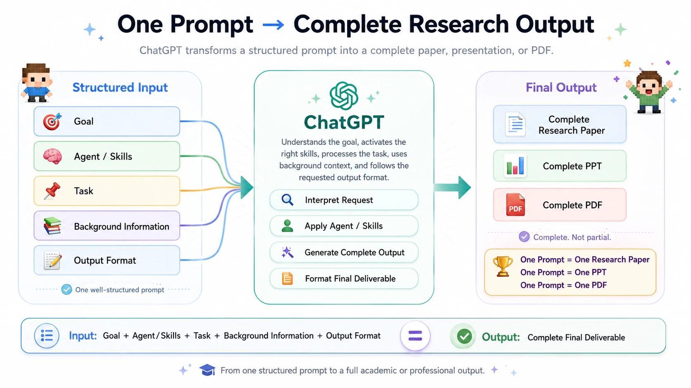
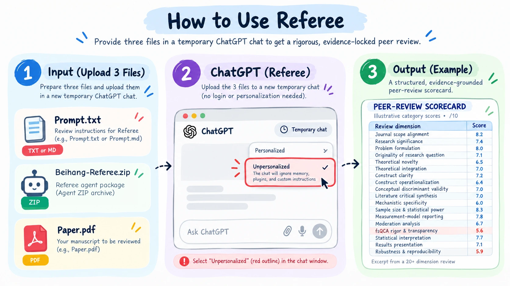

Download the 3 practice files
Click each file name to save it to your computer.
- referee-prompt.txtTells the AI what to look for
- referee-instructions.txtTells the AI how to write the review
- practice-manuscript.pdfThe made-up paper it will review
Start here
Six simple steps. At each step you copy a ready-made prompt, paste it into ChatGPT or Claude with your files, and save what comes back for the next step.
How it works
Each step uses what the step before it made. Click any step to open it.
Not sure what to type? Every step has ready prompts for beginners, researchers and experts →
If the literature check shows your idea is not new, go back to step 1. If the review finds problems, fix them and review again.
Pick a task in the prompt builder and type your details.
Attach the files the step lists, then send.
Open the sources it cites. Never trust a number you cannot trace.
The saved file is the input for the next step.
Choose a task and add your details. Copy the result, open a chat, and attach the files listed in the current stage. See an example.
Practice first · about 5 minutes
New to using AI for research? Do this once. You will download a short made-up paper, ask ChatGPT to review it, and check the answer. Nothing you do here matters, so you can't get it wrong.
Problem 1: students chose reminders themselves…
Where: page 1, Methods
…students chose whether to receive a reminder…
✓ It really says thatClick each file name to save it to your computer.
Tip: in ChatGPT you can choose Temporary chat so this practice is not saved.
The AI will list problems with the paper. For the first problem, open the PDF at the place it points to. Does the paper really say that? If yes, the AI did a good job. If not, tell it so in the chat.
A good answer looks something like this:
Your chat's wording will be different. That's fine.
Want to see the answer as a picture with a quality check? Paste it under Prompts → Check the answer you got.
It is the same three moves every time: copy a prompt, attach your files, check the answer. The Prompts page gives you the right prompt for each step.

